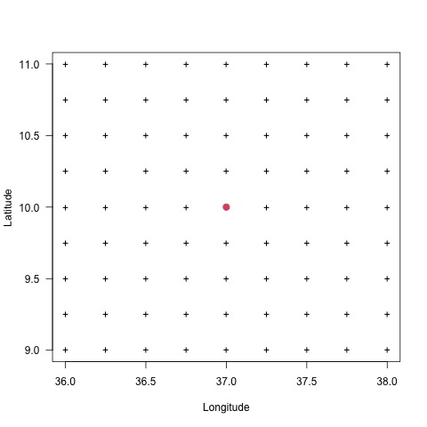
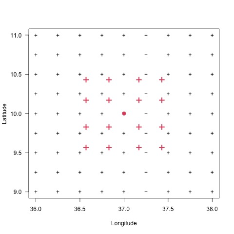
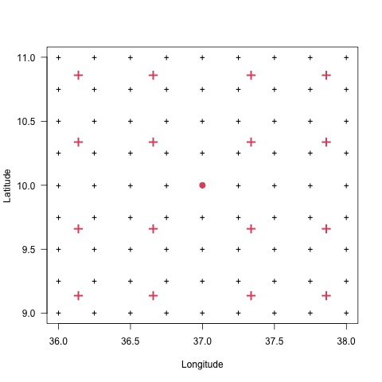
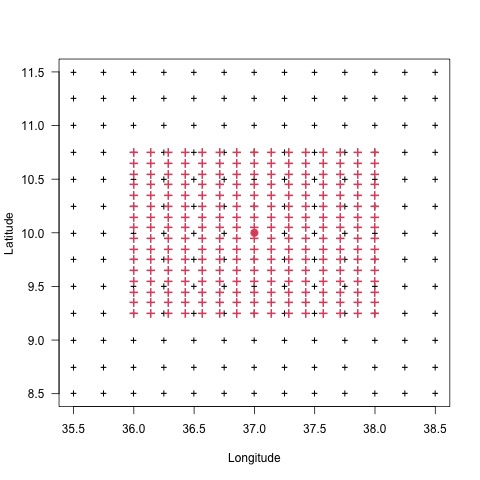

A global interpolation uses all available known points in the study area to estimate the unknown value of a point located within the study area. Local interpolation on the other hand, uses a sample of known points to estimate the unknown value.
Local interpolation is designed to capture the local or short-range variation, while global interpolation assess global spatial structures and the local or short-range variation.
Global interpolation generally produces smoother surfaces. For many meteorological variables, it is more accurate to estimate the unknown value at a point using a local method than a global method.
The difference between local and global interpolation lies in the number of points used in the estimation of the unknown value.
To perform a spatial interpolation with CDT, you have to provide the minimum (nmin) and maximum (nmax) number of neighbors points to be used to estimate the unknown value at a grid node, and the maximum distance (maxdist) within which the neighbor points will be selected. A radius is generated around each grid node from which neighbor points are selected to be used in the interpolation. The unit of maxdist is in decimal degree.
If there are more neighbor points than nmax found inside the search radius then the nmax points nearest to the grid node are only used to interpolate. If there are less neighbor points than nmin found inside the search radius then the value of the grid node is set to missing.
The figure below shows a maps of global and local interpolation using the inverse distance weighted method. The global interpolation uses all station observations; the local interpolation is interpolated using nmin = 2, nmax = 5 and maxdist = 0.3 degree.
There are two main groupings of interpolation methods: deterministic and stochastic. Deterministic interpolation method is based on exactly predetermined spatial contexts such as the extent of similarity or the degree of smoothing. Stochastic interpolation method, on the other hand, considers random functions, including the spatial dependence between points; it quantifies the spatial autocorrelation among measured points and account for the spatial configuration of the sample points around the prediction location.
Deterministic interpolation method provides no assessment of errors with predicted values, while a stochastic interpolation method offers assessment of predictions errors with estimated variances.
CDT has 4 deterministic interpolation methods: inverse distance weighted, modified Shepard interpolation, Spheremap interpolation method and nearest neighbor; and 2 stochastic interpolation methods: ordinary kriging and universal kriging.
The nearest neighbor method assigns the value from the nearest observation to a certain grid node.
The application of NN is limited in meteorology, especially when dealing with continuous variables. But it can give a better result when using a dense station networks. The NN method may be used with categorical variables.
To limit the influence of one point a maximum distance of influence can be applied. The elevation data can be included in the interpolation process as a third dimension to take account the influence of the elevation.
IDW is an advanced nearest neighbor approach that allows including more observations than only the nearest observation. The value at a certain grid node is obtained from a linear combination of the neighboring stations. The weight of each observation is determined by the distance, the distance function is non-linear.
Mathematically, it can be described by considering \(z(x)\) as the interpolated value at a point \(x\), \(z(x_i)\) is the observed value at the point \(x_i\), \(n\) is the number of points observations used to interpolate, and \(w_i\) denotes the weighting factor:
\[ z(x) = \sum_{i=1}^n w_i z(x_i) \]
The weight \(w_i\) is a mathematical function whose values depends on the distance between \(x\) and \(x_i\). Generally Euclidean distance is used for IDW. There are several variants of the weighting factors, but the two most used are inverse power and exponential:
\[ w_i = \frac{w(d_i)}{\sum_{i=1}^n w(d_i)} \]
where \(d_i\) is the distance between \(x\) and \(x_i\).
For the inverse power function
\[ w(d) = \frac{1}{{d}^\beta} \]
and for the exponential function
\[ w(d) = e^{-\left(\frac{d}{d_0}\right)^\beta} \]
where \(\beta\) denotes the weighting power and \(d_0\) is the decorrelation distance.
The most widely used weighting power is \(\beta = 2\). The figures below show a comparison between the inverse power and exponential weighting functions. The inverse power decreases faster than the exponential function, this implies that the exponential produces a smoother interpolated surface than inverse power function.
The choice of this weighting power \(\beta\) can significantly affect the estimation quality. The optimal weighting power depends on the spatial structure of the data. Higher weighting power values emphasize the influence of the points nearest to the grid node, resulting in a more detailed and less smooth interpolated surface. A smaller power value gives more influence to distant points, and results in a more averaged and smoothed interpolated surface.
In the same way, the choice of the decorrelation distance \(d_0\) can affect the smoothness of the interpolated surface. A higher value of \(d_0\) results in a more smoothed interpolated surface.
The modified Shepard interpolation method is modification of the IDW method, with the aim of reducing the expressive local values (outliers, extremes) that could cause bull-eyeing or butterfly shapes effects. The weighting function is designed to have local support. The estimation using modified Shepard interpolation method is done by:
\[ z(x) = \sum_{i=1}^n w_i z(x_i) \]
where \(z(x)\) represents the interpolated value at a point \(x\), \(z(x_i)\) is the observed value at the point \(x_i\), \(n\) is the number of points observations used to interpolate, and \(w_i\) denotes the weighting factor. There are several variants of the weighting factor, the following equation is used in CDT:
\[ w_i = \frac{w(d_i)}{\sum_{i=1}^n w(d_i)} \]
where \(d_i\) is the distance between \(x\) and \(x_i\), and the weighting function \(w(d)\) is given by
\[ w(d) = \left[\frac{R - d}{R d}\right]^\beta \]
where \(R\) is the distance from the interpolation location to the most distant point and \(\beta\) denotes the weighting power.
The choice of this weighting power \(\beta\) can affect the smoothness of the interpolated surface. A higher value of \(\beta\) results in a more smoothed interpolated surface.
Kriging is a geostatistical interpolation method that considers both the distance and the degree of variation between known data points when estimating values in unknown areas. Geostatistic is a branch of statistics that explores natural phenomena that are both random and structural.
Kriging recognizes that the simple smooth mathematical function can not be used in modelling the spatial variation of any continuous attribute value. The variation can be better described by a stochastic surface with an attribute known as a regionalized variable. The regionalized variable theory assumes that the value of a random variable \(Z\) at a location \(x\) is given by:
\[ Z(x) = m(x) + \varepsilon^{'}(x) + \varepsilon^{''} \]
where \(m(x)\) is a deterministic function describing a structural component of \(Z\) at \(x\), \(\varepsilon^{'}(x)\) represents the random spatially correlated component (it is the regionalized variable), and \(\varepsilon^{''}\) is a random noise component following normal distribution (non-spatially correlated term, also known as nugget variance)).
When structural effects have been accounted for and the variation is homogeneous in its
variation, the semivariance \(\gamma (h)\) can be estimated by:
\[ \hat{\gamma}(h) = \frac{1}{2n} \sum_{i=1}^n \{z(x_i) - z(x_i + h)\}^2 \]
where \(n\) is number of pairs of sample points of observations of the values of attribute \(z\) separated by distance \(h\).
A plot of \(\gamma (h)\) against \(h\) is called a semivariogram and gives a quantitative description of the regionalized variation. An important factor of the variogram is the range, which describes the distance when the data points become spatially independent.
The variogram can be used to estimate the optimal weights needed for interpolation. The value of \(z(x)\) for an unknown point \(x\) is expressed as follows:
\[ z(x) = \sum_{i=1}^n \lambda_i z(x_i) \]
where \(z(x_i)\) is the measured value at the location \(x_i\), \(n\) is the number of points observations used to interpolate, and \(\lambda_i\) denotes the weighting factor which is computed from the variogram model.
CDT uses the package gstat to fit the variogram. Read the gstat user’s manual for more information about the kriging.
Ordinary kriging is the basic form of Kriging. The prediction by ordinary kriging is a linear combination of the measured values. The spatial correlation between the data, as described by the variogram, determines the weights.
Ordinary kriging assumes the model
\[ Z(x) = \mu + \varepsilon^{'}(x) + \varepsilon^{''} \]
where \(\mu\) is an unknown constant. One of the main issues concerning ordinary kriging is the assumption of intrinsic stationarity (a constant mean), unfortunately meteorological variables are often not stationary. In some case this issue can be eliminated by performing a local interpolation and using different sizes and shapes of the search radius.
Ordinary kriging can use either semivariograms or covariances, use transformations and remove trends, and allow for measurement error.
Universal kriging is also known as kriging with a trend/external drift. It uses a regression model as part of the kriging process to model the mean value expressed as a linear or quadratic trend.
Universal kriging assumes the model
\[ Z(x) = \mu(x) + \varepsilon^{'}(x) + \varepsilon^{''} \]
where \(\mu(x)\) is some deterministic function (regression model).
Universal kriging considers the influence of auxiliary factors on the predicted variable and make use of the spatial autocorrelation of the predicted variable and its cross-correlation information with related auxiliary variables, but they have different modeling methods and calculation processes. Universal kriging describes the trend change of the predicted variable in a certain spatial neighborhood by establishing
the functional relationship between the predicted variable and explanatory variables.
Universal kriging can use either semivariograms or covariances, use transformations, and allow for measurement error.
The figure below shows a comparison of the ordinary and universal kriging interpolation methods. The ordinary kriging uses a Gaussian variogram model with partial sill = 2.095, range = 0.641 degree and nugget = 0.0864. The universal kriging includes the elevation data as auxiliary variable, and a Gaussian variogram model with partial sill = 1.648 and range = 0.4167 degree.
The Spheremap interpolation method is an application of Shepard’s scheme on a sphere. It takes into account the spherically-derived distances and angles between the grid nodes and stations. This interpolation technique is implemented at the Global Precipitation Climatology Centre (GPCC). Willmott et al. (1985) identified weights \(S_k\) for the interpolation procedures according to three categories of distance as follows:
\[ S_k = \begin{cases} d_{j,k}^{-1}, & d_{j,k} \le r_j/3 \\ \frac{27}{4r_j} \left(\frac{d_{j,k}}{r_j}-1\right), & r_j/3 \le d_{j,k} \le r_j \\ 0, & d_{j,k} \gt r_j \end{cases} \]
where \(r_j\) is the search radius and \(d_j\), \(d_{j,k}\) is the distance from grid node \(j\) to nearby station \(k\).
The estimation of the value at a grid node \(j\) using Spheremap interpolation method is given by:
\[ \hat{z_j} = \begin{cases} \sum_{k=1}^{n_j} f_k (z_k + \Delta z_k), & d_{j,l} \gt \epsilon \\ \\ \frac{1}{m} \sum_{k=1}^{n_j} z_k, & d_{j,l} \le \epsilon \end{cases} \]
with
\[ f_k = \frac{W_k}{\sum_{k=1}^{n_j} W_k} \]
where \(\hat{z_j}\) is the interpolated value at the grid node \(j\) and \(z_k\) is the observed value at the station \(k\), \(\Delta z_k\) is an incremental correction added to \(z_k\), \(d_{j,l}\) is the distance from grid node \(j\) to nearby station \(l\), \(m\) is the number of stations within the radius \(\epsilon\) of grid node \(j\). \(n_j\) (\(nmin \le n_j \le nmax\)) is set of nearby stations, it is used to estimate the search radius. The weights \(W_k\) are computed from
\[ W_k = S_{k}^2 \left(1 + \frac{T_k}{\sum_{l=1}^{n_j} S_l} \right), ~~~~~ l \neq k \]
\(T_k\) is the directional isolation of each nearby station with regard to \(j\)
\[ T_k = \sum_{l=1}^{n_j} S_l [1 - \cos \theta_j(k,l)], ~~~~~ l \neq k \]
where \(\theta_j(k,l)\) is the angular separation of the nearby stations \(k\) and \(l\) when the vertex of the angle is defined as te grid node \(j\).
See Willmott et al. for more details.
The figure below shows a comparison of the Spheremap, modified Shepard and IWD interpolation. The interpolated surface from the Spheremap method is less smoothed than the modified Shepard and IDW.
References:
Willmott, C. J., Rowe, C. M., and Philpot, W. D. (1985): Small-scale climate maps: A sensitivity analysis of some common assumptions associated with grid-point interpolation and contouring. American Cartographer, 12, 5-16.
A bilinear interpolation method is simply linear interpolations, first along the x-axis and then along the y-axis. The weighting for the interpolation is given by the area ratio of the four rectangles splitted by the grid node to their area sum.
Suppose that we want to interpolate the value \(z\) at a grid node \((x, y)\), which is surrounded by four rectangular points \((x_1, y_1)\), \((x_1, y_2)\), \((x_2, y_1)\) and \((x_2, y_2)\) with observed values \(z_{11}\), \(z_{12}\), \(z_{21}\) and \(z_{22}\), respectively. The figure below shows the configuration of a grid node on which conventional bilinear interpolation proceeds using the four rectangular points surrounding the grid node.
The interpolation is given by
\[ z = w_{11} z_{11} + w_{12} z_{12} + w_{21} z_{21} + w_{22} z_{22} \]
where
\[ w_{11} = \frac{(x_2 − x) (y_2 − y)}{(x_2 − x_1) (y_2 − y_1)}\\ w_{12} = \frac{(x_2 − x) (y − y_1)}{(x_2 − x_1) (y_2 − y_1)}\\ w_{21} = \frac{(x − x_1) (y_2 − y)}{(x_2 − x_1) (y_2 − y_1)}\\ w_{22} = \frac{(x − x_1) (y − y_1)}{(x_2 − x_1) (y_2 − y_1)} \]
CDT mainly uses bilinear interpolation for regridding a gridded data from low resolution to a high resolution data.
To perform a spatial smoothing CDT computes the average of the predicted values over a defined grid nodes located inside a block (square or rectangle) centered at the grid nodes. To define the block, there are two choices: using a Gaussian quadrature with 16 grid nodes or providing the width and the number of grid nodes for the latitude and longitude.
The Gaussian quadrature method is an approximate method of calculation of a definite integral of a function. The approximation is the weighted sum of function values at specified points within the domain of integration.
A quadrature method is of the form
\[ \int_{a}^{b} f(x)dx \approx \sum_{j=0}^{n} w_j f(x_j) \]
where \(x_j\) are equally spaced nodes and \(w_j\) are the weights.
The most common domain of integration used in Gaussian quadrature is the interval [−1, 1] and the nodes will all be contained in this interval.
In Gauss Legendre quadrature \(x_j\) are the roots of a Legendre polynomial \(P_n (x)\) of degree \(n\). The Legendre polynomial has exactly \(n\) real and various roots in the interval [−1, 1]. The weights \(w_j\) of the Gaussian quadrature formula are defined by
\[ w_j= \frac{1 - x_{j}^2}{[nP_{n-1} (x_j)]^2} = \frac{1}{[P_{n}^{'} (x_j)]^2} \]
For \(n = 4\), the nodes and weights are as follows
| \(j\) | \(x_j\) | \(w_j\) |
|---|---|---|
| 1 | -0.4305681558 | 0.1739274226 |
| 2 | -0.1699905218 | 0.3260725774 |
| 3 | 0.1699905218 | 0.3260725774 |
| 4 | 0.4305681558 | 0.1739274226 |
For spatial interpolation the prediction of a point can be done over a rectangular block centred at prediction location (block-to-block: one block for each dimension). The prediction of one point is computed by averaging the predicted points formed by the rectangular block obtained from Gauss quadrature with 4 nodes in each dimension.
The approximation of a function \(f\) (semivariances, covariances, coordinate polynomials or inverse distance weighted interpolations) over a block-to-block \(B_x\) and \(B_y\) can be obtained with
\[ f(B_x,B_y ) \approx \sum_{i=1}^{n}\sum_{j=1}^{m} w_i w_j f(dx_i, dy_j) \]
where \(dx_i\) is the discretization of \(B_x\) and \(dy_j\) for \(B_y\).
The nodes can be multiplied by a factor to extend the size of the domain. Let’s denote by \(block_x\) the factor to be multiplied to \(B_x\), which is the width of the block in the longitude direction, and \(block_y\) for \(B_y\) in the latitude direction. The figures below show the size of the different values of \(block_x\) and \(block_y\). The units of \(block_x\) and \(block_y\) are the same as the units of coordinates of the stations data to interpolate.
| \(block_x = 0\) and \(block_y = 0\) | \(block_x = 1\) and \(block_y = 1\) | \(block_x = 2\) and \(block_y = 2\) |
|---|---|---|
|  |  |  |
(+) the grid nodes for the interpolation; (•) one grid node to interpolate, taken as example to show the size of the block; (+) points on which the data will be interpolated before averaging it to get the value at (•).
To set the size of the block in CDT, you can use the function interpolation.options() for the spatial interpolation menu, biascoeff.options() for the bias adjustment menus, and merging.options() for the merging menus. For example, to use a Gaussian quadrature defined block with 1.5 degree width in longitude and 2 degree width in latitude
merging.options(blockType = "gaussian", blockSize = c(1.5, 2))The figure below shows the maps of interpolated stations data using different blocks values: 0 (no smoothing), 0.5, 1, 1.5 and 2 degree. The more you increase the value of the block, the more the interpolated surface is smooth. Using a block mean tends to remove the bullseye effect from the interpolated surface.
You can define the size of the block by specifying the width and the increment to use for the longitude and latitude.
In CDT the creation of the block can be done with the function interpolation.options() for the spatial interpolation menu,biascoeff.options() for the bias adjustment menus and merging.options() for the merging menus. For example, to create a block with 2 degree width and increment 0.15 degree in longitude and 1 degree width and increment 0.1 degree in latitude
## blockSize is a vector of length 4 in the form (width_x, by_x, width_y, by_y)
merging.options(blockType = "userdefined", blockSize = c(2, 0.15, 1.5, 0.1))We can represent it in a grid as follow
| no smoothing | \(width_x = 2\); \(by_x = 0.15\); \(width_y = 1.5\); \(by_y = 0.1\) |
|---|---|
|  |
(+) the grid nodes for the interpolation; (•) one grid node to interpolate, taken as example to show the size of the block; (+) points on which the data will be interpolated before averaging it to get the value at (•).
The figure below shows the maps of interpolated stations data using different blocks values: no smoothing, blockSize = c(0.5, 0.1, 0.5, 0.1), blockSize = c(1, 0.15, 1, 0.15), blockSize = c(1.5, 0.2, 1.5, 0.2) and blockSize = c(2, 0.25, 2, 0.25). The larger is the size of the block, the smoother is the interpolated surface.